RHI, c'est le Relevé Hebdomadaire Individuel. Chacun touche son nom, puis son chantier : le temps compte tout seul, sur le bon numéro d'affaire (le CH). Plus de feuille d'heures à remplir le lundi — et chaque affaire sait enfin ce qu'elle a coûté en main-d'œuvre.
Touchez une capture pour la voir en grand.
🏭 À l'atelierLa tablette sur pied. Trois gestes par jour, pas plus.

En haut, mon planning du jour : mes chantiers, déjà prêts. Un seul toucher suffit.

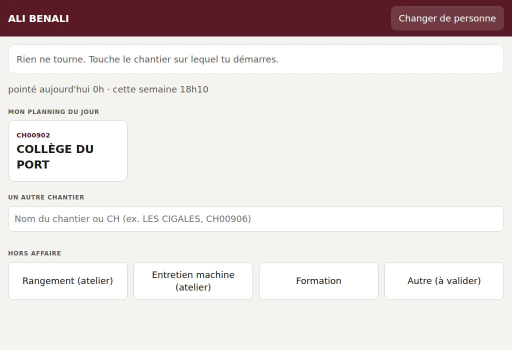
Le cadre vert dit sur quoi je pointe. Je peux poser la tablette et aller travailler : elle revient toute seule à la liste des noms au bout d'une minute, le suivant ne pointe pas sous mon nom.

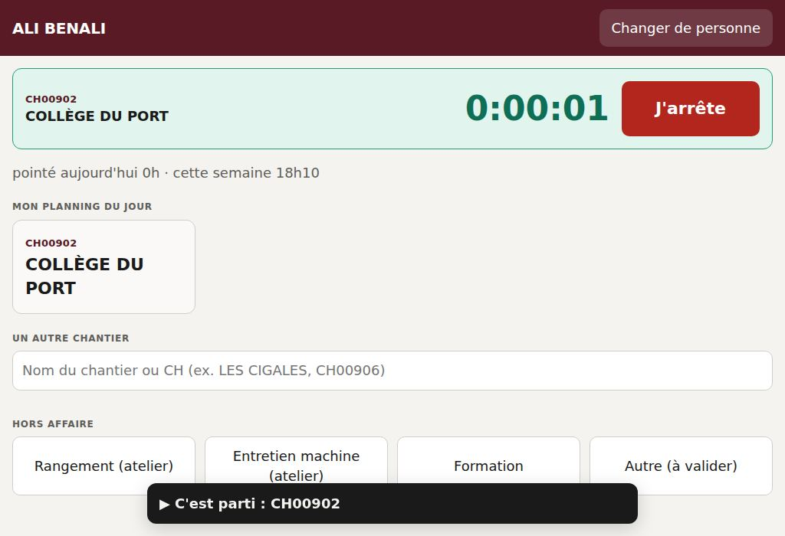
Le gros bouton rouge. C'est tout.
Je change de chantier dans la journée
Je touche simplement l'autre chantier : le premier s'arrête tout seul, pas besoin d'appuyer sur « J'arrête » entre les deux.
Mon chantier n'est pas dans mon planning
Trois lettres suffisent (« clin » trouve la Clinique du Parc). Je touche le bon. Une intervention sans numéro d'affaire va sur CH DIVERS : le bureau transférera les heures. Un CH qui n'existe nulle part est accepté quand même : le bureau vérifiera.

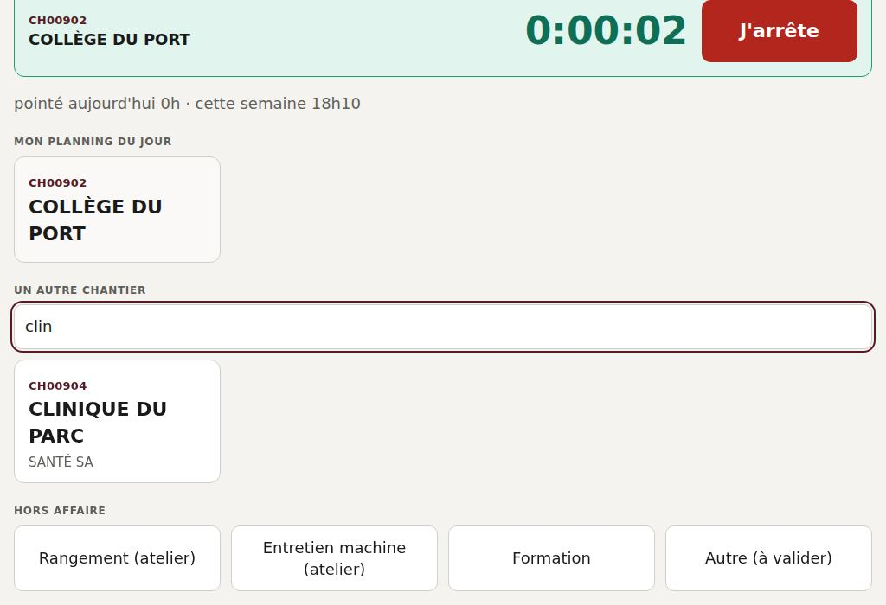
Je ne suis pas sur un chantier
Rangement, entretien machine, formation : ce temps-là compte aussi (sur le CH des frais généraux). « Autre » sera validé par le bureau. Le pliage, le débit, le plasma se pointent toujours sur un CH.

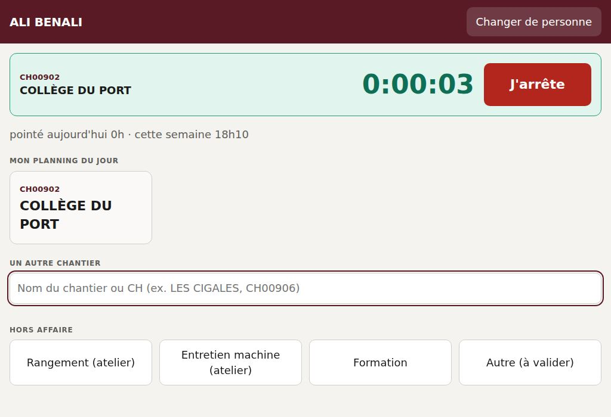
🚚 En poseLe téléphone du chef d'équipe pointe pour lui et son binôme.
Les noms choisis sont encadrés. Le téléphone s'en souvient pour les jours suivants.

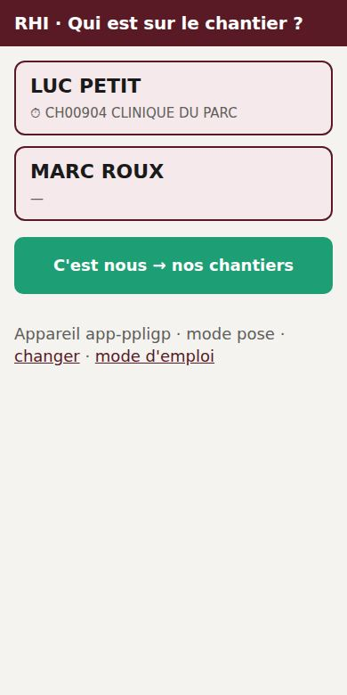
Le trajet compte dans le chantier : on pointe en partant, et le retour du soir compte sur le dernier chantier de la journée.

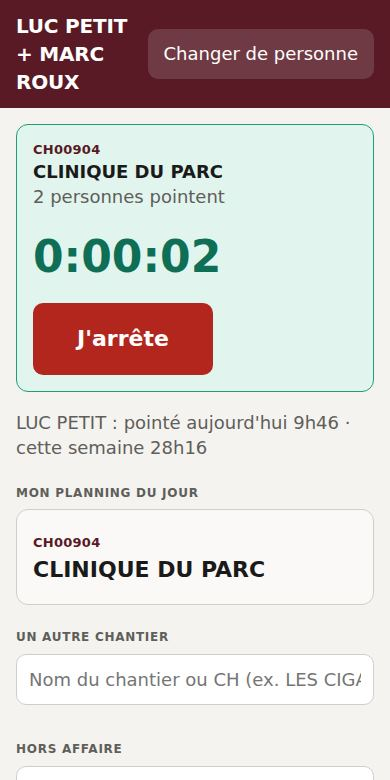
🛟 Un souci ?
Pas de réseau
Un bandeau orange dit « Hors ligne · N gestes en attente » : ils partent tout seuls au retour du réseau, à l'heure où ils ont été faits. Au-delà de trois jours sans réseau, le bureau saisit à la main.

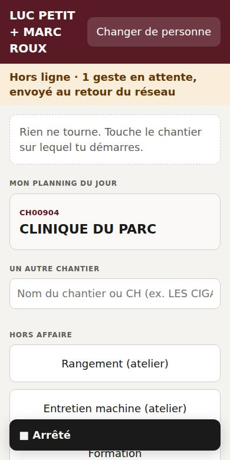
- J'ai oublié d'arrêter hier soir.
- Pas de panique, rien n'est bloqué : on le dit au bureau, qui corrige. Un pointage resté ouvert plus de 10 heures est repéré tout seul.
- J'ai pointé sur le mauvais chantier.
- Je touche le bon chantier tout de suite, et je préviens le bureau pour le début de la journée.
- Mon nom n'est pas dans la liste.
- Le bureau l'ajoute (onglet Personnes) : il apparaît aussitôt sur les tablettes.
- La tablette demande un « code d'accès ».
- C'est la première fois qu'elle sert : le bureau tape le code terrain, une seule fois. Si elle demande « Cet appareil sert à… », toucher 🏭 L'atelier (tablette sur pied) ou 🚚 La pose (téléphone du chef).
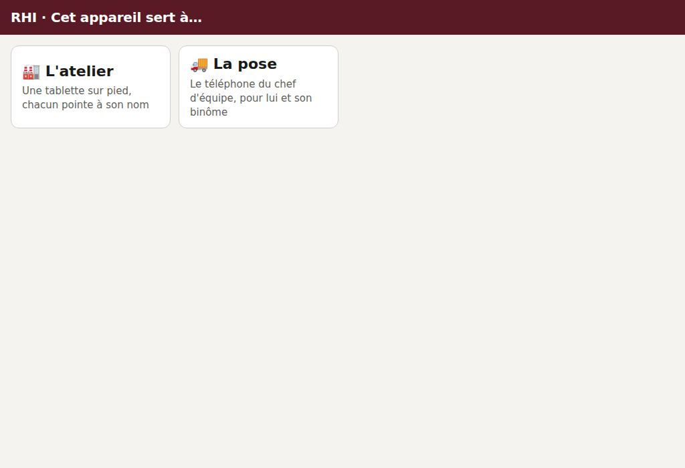
🖥 Au bureauSur PC : les onglets sont à gauche. Sur téléphone : en haut, on les fait défiler du doigt. Le code bureau est demandé une fois par appareil.
Déposer le planning ATE (atelier), le planning POSE et, pour la marche en avant, le planning BET. RHI en tire les noms et « mon planning du jour » de chacun. Les heures déjà pointées ne sont jamais touchées. Une fois par semaine : Télécharger toute la base, à garder ailleurs.

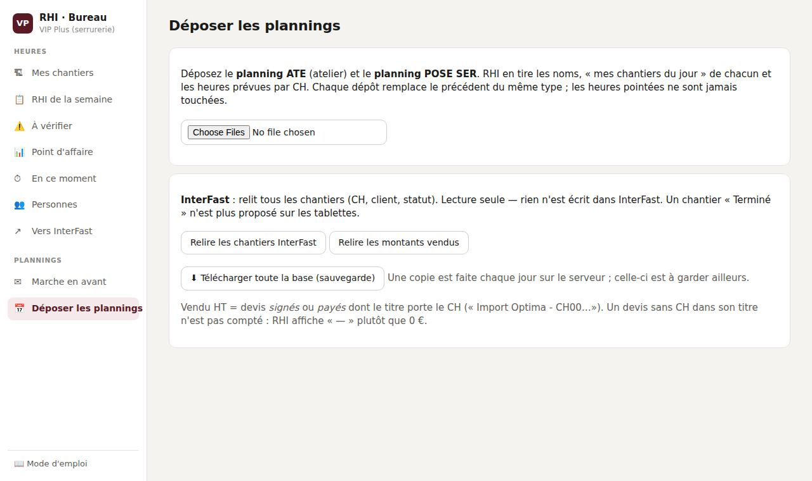
Choisir son nom en haut. Chaque CH de la semaine montre qui y a pointé, jour par jour, avec les écarts au planning (pointé hors planning, prévu mais rien pointé). Quand c'est juste : ✓ Heures contrôlées. Un pointage corrigé ensuite sur ce CH rouvre le contrôle ; le bouton reste bloqué tant qu'un pointage est ouvert.

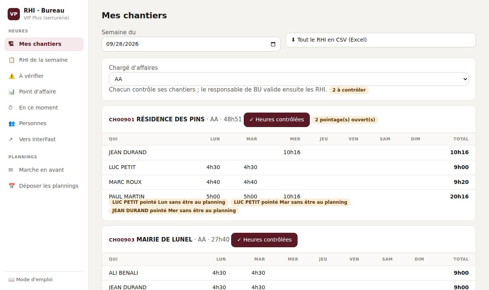
Les arrêts oubliés, les CH tapés à la main, les motifs « autre » : corriger la fin ou le CH sur la ligne. En haut, Ajouter un pointage oublié (une journée pas pointée). Dessous, Au planning, rien pointé : « Saisir » remplit le formulaire avec le chantier prévu, il reste à mettre les heures. Congé ou maladie : rien à faire.

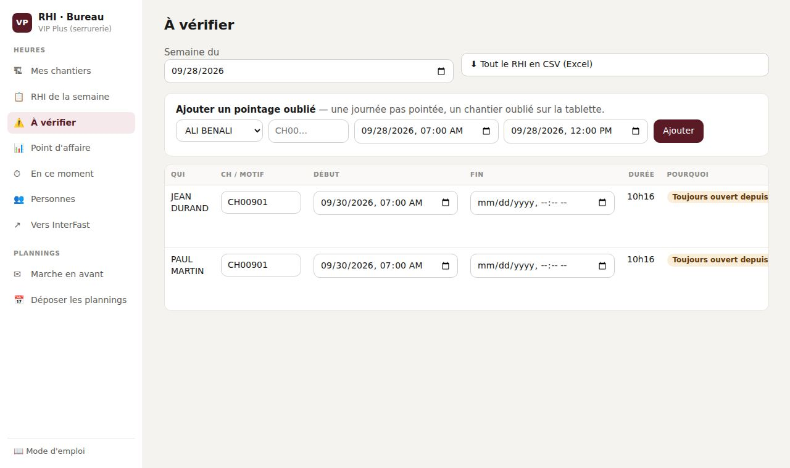
Relire chaque relevé, puis Valider la semaine. Sur chaque ligne, « ✓ » et qui a contrôlé le CH, ou « à contrôler ». Valider tous les relevés sans alerte valide d'un geste ceux qui n'ont rien à regarder ; les autres sont listés avec la raison. Imprimer les RHI à signer : une feuille par personne, deux cases de signature. Une semaine validée ne se corrige plus sans être dévalidée. En tête, le temps hors affaire de la semaine.

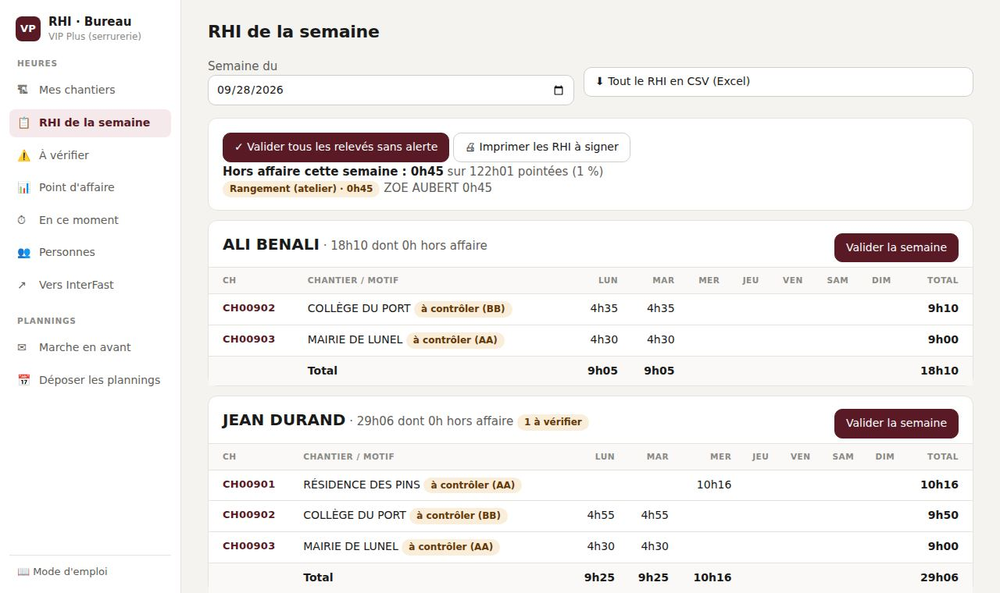
Heures réelles face au prévu fab, coût de main-d'œuvre, vendu HT. Cliquer un CH pour le détail. Le chargé d'affaires y tient le reste à faire : saisir le reste en heures (et, une fois, les heures chiffrées au devis, pose comprise), puis « Enregistrer l'estimation ». Projeté = engagé + reste, face au chiffrage : vert dans les clous, ambre au-dessus, rouge au-delà de 110 %. Le reste fond tout seul à mesure qu'on pointe ; tout consommé, l'estimation est « dépassée » : il faut la refaire.

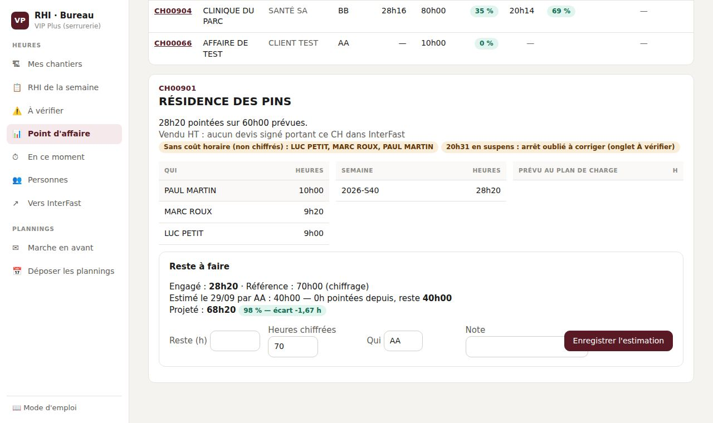
Une case par CH et par jour, avec toute l'équipe, pour les RHI validés. Sous chaque case, les heures de chacun (début, fin, pause) à recopier en terminant la case dans InterFast, puis valider la feuille de temps là-bas. Rien n'y est envoyé pour l'instant, sauf pour l'essai : seule l'affaire de test CH00066 porte le bouton « Essai : poser cette case dans InterFast ». Les autres cases montrent ce qui partirait, sans rien envoyer.

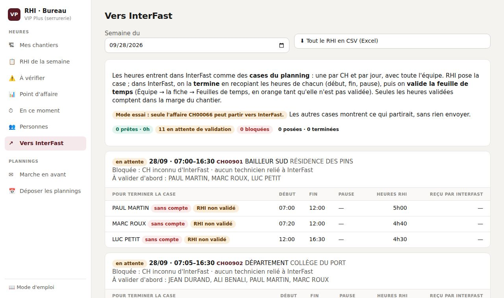
Les poses des quatre semaines face à leurs études, leur fab et leur traitement. Une fab n'est comptée faite que si elle est datée d'avant aujourd'hui. La synthèse se télécharge (« ⬇ La synthèse »), à transférer par mail : l'envoi automatique du lundi n'est pas branché.

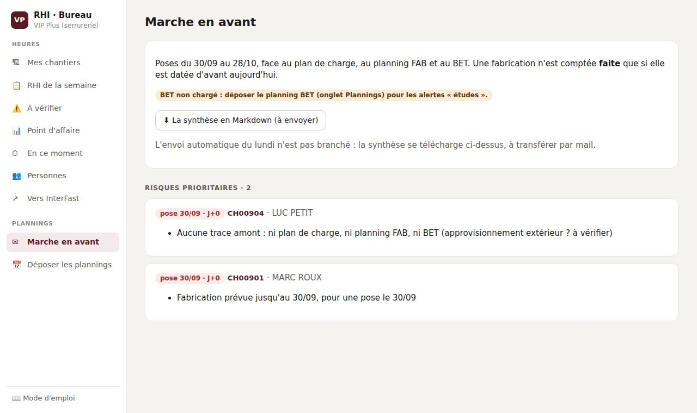
Ajouter une personne : nom et équipe ; elle apparaît aussitôt sur les tablettes. En fin de mission, décocher « Actif ». On y règle aussi le coût horaire et le compte InterFast de chacun.

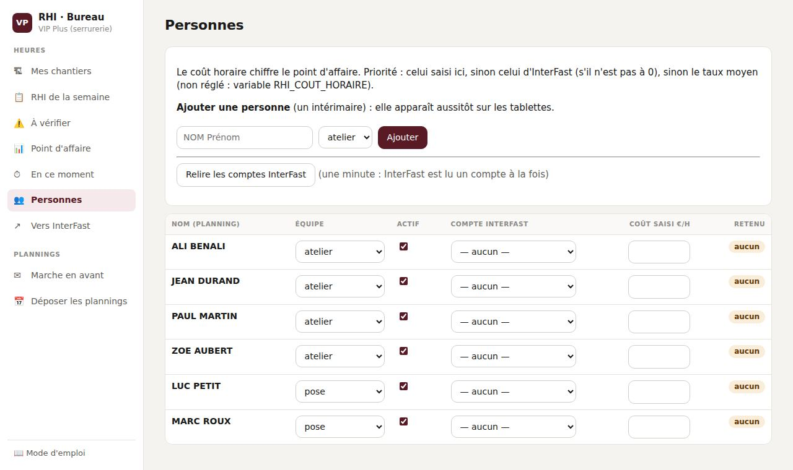

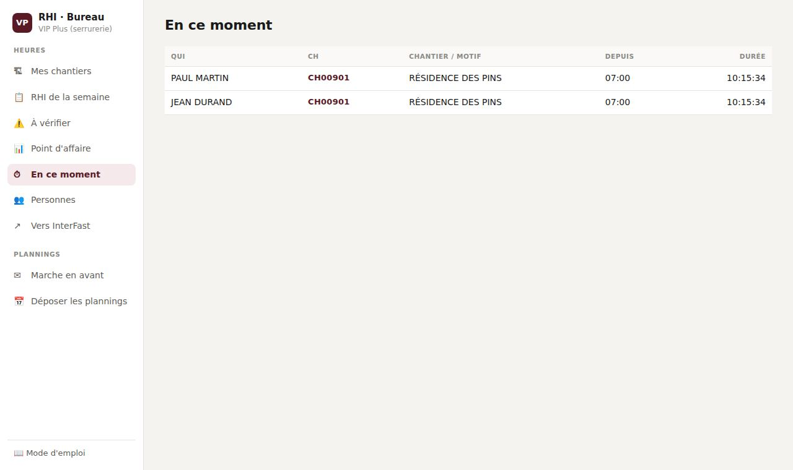
L'écran du mur
Ouvrir /ecran en plein écran sur la télé de l'atelier. Il alterne toutes les 15 secondes l'atelier du jour (qui pointe quoi), la pose de la semaine et les envois en traitement, et se met à jour tout seul.
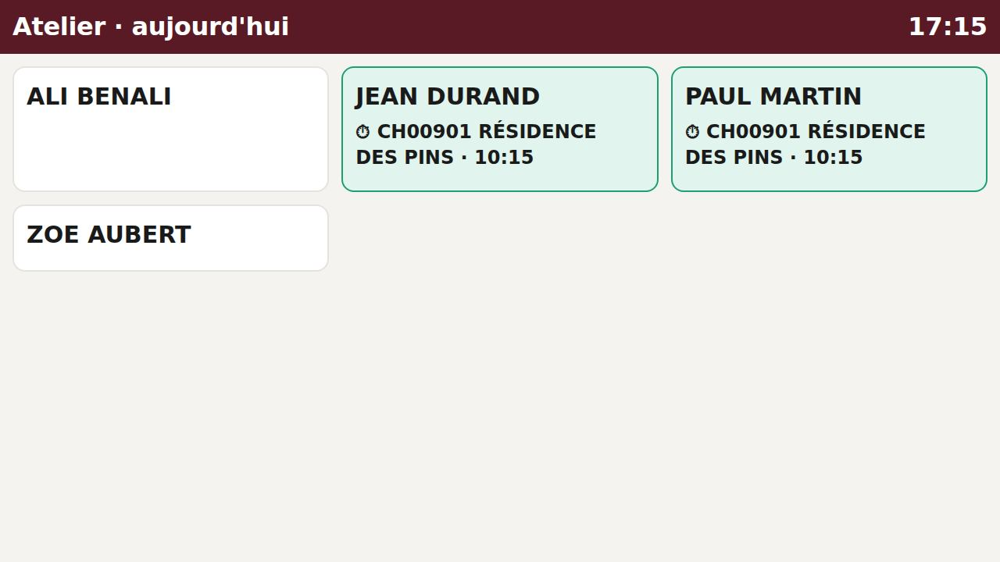
Les captures de ce guide sont faites sur des noms et des chantiers inventés.